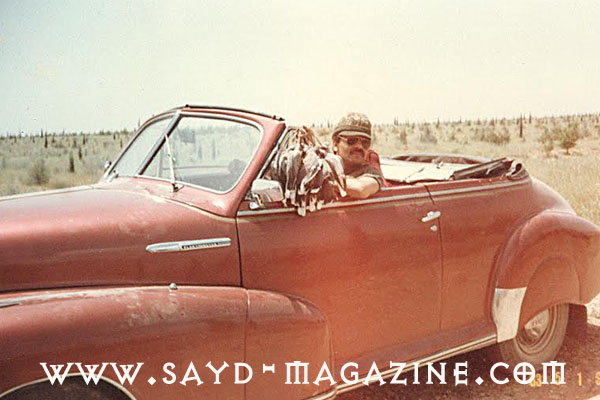

اذا اردت الغوص في عالم الصيد فلا تتجه نحو من يحملون البندقية بأياد مضطربة وينظرون الى الفضاء بعيون شرسة بحثا عن جريمة قتل لطائر، ويثرثرون ثرثرات حمقى لا تمت الى المعرفة بصلة.. فقط اتجه نحو " شيوخ الصياده" الذين تعرفهم من شغفهم بحب الطبيعة ومعلوماتهم العميقة وهدوئهم واحترامهم لأنفسهم ولطريدتهم.. شيخ الصياده وليد العطار، صياد من سوريا، من "الشبعانين" الذين يرون في الصيد نهج حياة لا " جوع عتيق" ولا " فجعة نفس ومعدة". وهو عضو مؤسس في الجمعية السورية للحياة البرية وعضو بالمجلس المركزي للصيد كخبير للحياة البرية والصيد.وقد ساهم كثيرا في حماية هواية الصيد من خلال التوعية، وأنشأ محمية لمراقبة الحياة البرية على مساحة واسعة في منطقة صحراوية في سوريا. كان لـ " صيد" معه هذه الحوار كيف ينظر صياد مثلك يحمي الطبيعة وهواية الصيد الى ممارسات الصيد الجائر؟ الصيد الجائر هو التمتع بالصيد بدون ضمير أو رادع إنساني، وتعود أسبابه الى قلة فهم يشجعها جشع تجار لحوم الصيد والى الإختباء خلف كلمة "خليهن ينظموا الصيد" و المثل القائل إذا طلع على أبوك ريش قوصه. ومن المؤسف جدا في بلد يدعي الحضاري والرقي ان ترى في "السوبرماركات" جثث طيور تباع علناً بدون تاريخ أو رادع قانوني، في ظل وجود وزارة بيئة وجمعيات لا تعد ولا تحصى تدّعي الدفاع عن الحياة البرية و أخرى عن الصيد المستدام وتقيم كل يوم ورش عمل ومؤتمرات. ماهي العناصر التي يجب أن يتمتع بها الصياد؟ الصيد مدرسة يتم فيها صقل الرجال، وتهذيب النفوس وحب المغامرة، وسمو الروح بالرقي في العلاقة بين الصياد والحياة البرية.وقد علمنا أجدادنا وأكدوا على إتقان الرماية حتى نكون دقيقين في صيدنا لقتل مؤكد.. لا نجرح الطيور ونؤذها فقط، وأن نعطيها فرصة للنجاة فهي كائن مثلنا، وأن لا نستهتر بسلاح الصيد فهو خطر.أن يكون الصياد سريع البديهة وعلى علم ودراية بأنواع الطيور والطرائد فهي مرتبة وفخر بين الصيادة والأصدقاء... فلا يتفاجأ بطير ظهر فجأة فيقتله وهو محرّم... ( أنا أكره الصياد يلي بيكون منفوخ متل الديك ومدرع بألبسة الصيد ومعلّق بشناقته ورور وهدهد وسنونو وكم عصفور كل واحد لونه شكل). كيف نشأت علاقتك بالصيد؟ سمعت أنه عند ولادتي أهدوا أمي جفتا لقيامها بالسلامة، والمقولة تكمّلت أن فرخ البط عوّام فجدّي وعمّي وأبي لهم باع طويل بالصيد..أي أنه لا تصح أكلة أو طبخة يبرق (ورق عنب) إذا ما كان في تحتها دزينة ترغل خريفية. وبدأت الحادثة عندما أطلقت الخرطوشة الأولى من جفت جدّي الروبيست على مَطوَق في حوران، فوقع المطوق ووقع الجفت ووقعت أنا وضحك الجميع، وقال جدّي "راحت عليه صار صياد... جيبها جدّي واذبحها"، كان الدرس الأول. قال في اللقاء- من الذي طلب من الاستاذ جورج قرداحي وقف صيد الحجل؟ وزير البيئة أم وزير الزراعة أو هيئة تنظيم الصيد؟... بل لأنه راقي وحضاري ووجوده في البرية قدّر أن أعداد الحجل قد خفّت فاحترمها وامتنع عن صيدها.... - الصيد هو إحساس رفيع راق بين الروح والطبيعة. - إذا أردت أن تعرف خفايا الطبيعة فاسأل صياداً.. - بجهد خاص وفردي أنشأت محمية لمراقبة الحياة البرية ثم أصبحت مزرعة خاصة للصيد المراقَب والمسؤول.( هيك جبنا الأب الصياد يدرب الولد تحت إشرافنا). - انشأت لوحة من تصويري جمعت 56 نوعا من الطيور الموجودة في المحمية والتي تعبرها أثناء هجرتها بالأسماء العربية والعلمية. - أنا أكره التنافس غير الشريف تحت شعار"إن لم أقتلها فسيقتلها غيري". - أنا عضو مؤسس في الجمعية السورية للحياة البرية وهي الشريك الأكبر للمنظمات الدولية التي تعنى بالحماية والتوعية للحياة البرية واستدامة الصيد المسؤول. - لدينا مواد التدريب والتوعية مثل كتاب الدليل الحقلي لطيور سوريا وكتاب الممارسات الفضلى للصيادة ودليل الصيد. - شاركت بأهم كتاب للBirdlife International عن أبرز مناطق الطيور في الشرق الأوسط وسجلت أنواعا لم يكن معروف وجودها في سوريا. - من أهم مهارات الصيد عند الصياد هي معرفة المكان الذي يقصده للصيد وطرقه وعلمه بأنواع الطرائد التي يجب أن يصيدها. - التنوع الجغرافي الواسع في سوريا وجوها الأوسطي ووقوعها على أهم الممرات الساخنة لهجرة الطيور جعلها كينيا الشرق الأوسط لكثرة تنوع الطيور والحيوانات فيها والتي أهمها للصيد في الصحراء الكدري والقطا والحباري والأرانب، وكثرة البحيرات والسهول الزراعية جذب الكثير من الوز والبط والطيور المائية والتي هي أهم أنواع طيور الصيد مع الترغل والفري والكثير من أنواع العصافير. - مناطق الصيد كثيرة وواسعة في سوريا وأشهرها التي تقع على حوض نهر الفرات مثل الرقة وجرابلس ومنبج وقرى كثيرة في ريف المحافظات وجنوب البلاد والتي جذبت الكثير من الصيادة إليها والضيوف منهم. - الصيد الحقيقي لا يؤثر على التوازن البيئي، "هو من المنظومة العالمية لنظام التوازن البيئي". - جميع الهيئات والجمعيات المهتمة بالحياة البرية تدافع عن الصيد المسؤول أي التقيد بأوقات الصيد و عدم قتل الطيور المفيدة للزراعة أو المتاجرة بها. - كثرة أعداد السكان خلقت صيادين جدد ، وتطور الآليات وشق الطرقات التي أوصلت الصيادين المرتزقة مع مكناتهم وشباكهم إلى أقاصي الصحراء والبوادي وأعالي الجبال لقتل أكبر عدد من الطيور للمتاجرة بها... اثرت على هواية الصيد وعلى التوازن البيئي للحياة البرية في سوريا.. لا الصيادين الحقيقيين. - يجب الا نظلم الصيادين كثيرا فالزحف العمراني العشوائي ايضا الذي أكل المناطق الخضراء، والجفاف الذي أصاب البلاد لأكثر من مرة له اثر كبير في تدهور الحياة البريّة. - هواية الصيد قديمة جداً ولها قيمة اقتصادية واجتماعية ويرتبط فيها الكثير من أهل القرى البعيدة على مساحات واسعة، فهي مصدر رزق للصيادين المحليين فيها ومع تطور الصيد أصبحوا أدلاء للصيادين خاصةً الضيوف اللبنانيين والخليجيين. - في منطقة الرقة تشتري النساء بواريد بريتا 302 بدلاً من ماكينات سنجر للخياطة.. (بدل الخياطة بتأجر البارودة للصيادين الخليجيين بتربح أكثر). - بلد تعداده 23 مليون نسمة، نصفهم من الصيادين (ومابدك يكون بينهم صيادات!!) المجتمع السوري مفتوح على العالم أكثر من كل الشرق. - أحب صيد البحيرات والبراري أكثر من الصيد في البساتين. - الظروف الحالية في سوريا أدت إلى تزايد كبير في أعداد الحجل. - أنا نادم على كل حبارى قتلتها من حبارى الشيح أو الحبرم. والمثل يقول ( يللي ما يعرف الصقر يشويه). - أقول للصياد الذي يقتل البواشق أو الصقور أو العقبان بحجة التصبير أو المفاجأة أن هذه الطيور صيادة مثلنا ولهم حقوق علينا ويجب احترامها.. - من المعيب ان تمرّ بين الصيادين وفي يدك باشق او صقر او عقاب قتلته. - الصيد مرض وراثي عند الصيادين مثل السكري والزهايمر - نتمنى أن تعود بلادنا كما كانت وأجمل ليتمتع أولادنا بهذه الهواية الراقية... وليكملوا ويعلّموا أولادهم مسيرة الصيد الملتزم والواعي وليحموا المستقبل البيئي في بلادنا، فهم ولدوا لجيل غير جيلنا.كما يقول المثل عن الأمريكيين الأصليين: نحن لم نرث الأرض من أسلافنا وأجدادنا... بل استعرناها من أولادنا... فيجب أن نعيدها إليهم سالمة بحياتها البرّية. - إن حماية الحياة البرية وصونها يقع في المقام الأول على عاتق الصيادين، لضمان ديمومة ممارستهم لهوايتهم. - شكراً لمجلتكم الرائعة والقائمين عليها لنشر روح محبة الصيادين للحياة البرية وإطلاع العالم المهتم بالصيد على قصصهم لأخذ العبر منها... فالصياد هو حامي البيئة الأول..

{kind=link}